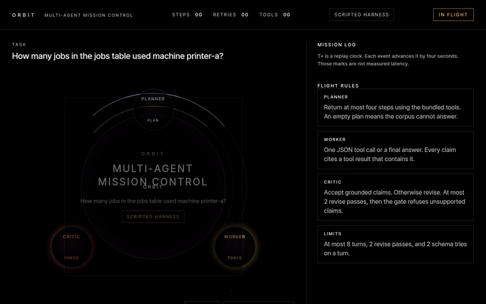

Mission 03 — Orbit
Orbit
Multi-Agent Mission Control
A local multi-agent AI team: planner, worker, critic; tool use; QLoRA fine-tuning.
Demo
This clip is Mission Control playing a saved engine trace. Press play when you want it. Nothing starts on its own.

Reduced motion hides the GIF. The video stays on its poster until you press play.
The T+ column in the log is a replay clock. It is not measured latency.
Replay
The panel below is the same static Mission Control page as in the repository. It loads three real traces the engine wrote: a quotient, a revise, and a refuse. Each one is marked scripted harness. That label means a scripted check of the tools, not a language-model score.
Play, pause, scrub, and speed all run in the browser. Pick another trace from the Trace menu. Scroll inside the panel if your window is short. The run form at the bottom needs the local server from the quickstart. On this site it says so, and the saved traces still play.
How it works
Three roles share one question. A program can check the answer, so a fluent guess is not enough.
- The planner plans. It reads the question and writes a short list of steps. If the notes on hand cannot answer, the plan is empty and the team stops.
- The worker uses tools. It takes one step at a time: a sandboxed Python cell, a calculator, reading a file, writing a file for this run, searching the bundled notes, or reading a saved web page. Nothing in that path opens a network connection.
- The critic checks and sends work back. A claim counts only when it names a tool result that actually contains the claim. Otherwise the critic returns it to the worker.
- A gate refuses unsupported claims. After the critic, the gate still drops any claim the cited tool result does not contain.
The practice questions are about a fictional makerspace: printers, a laser, and a shift sheet. Gold answers were computed by the checker and again by running the oracle snippet. Dev questions are for training and tuning. The test file stays frozen.
Flight rules, from the code the replay reads.
- The planner returns at most four steps, or an empty plan when the corpus cannot answer.
- The worker emits one tool call or a final answer. Every claim cites a tool result that contains it.
- The critic accepts grounded claims. Otherwise it revises, at most 2 times, and then the gate refuses unsupported claims.
- The team stops after 8 turns. A broken schema gets 2 tries on that turn.
QLoRA is a separate, optional fine-tune of a small open model. Training dialogues come from the dev split only. A leakage check rejects a test id, a test question, or a test tool snippet in those files. QLoRA and bitsandbytes are CUDA-only. The browser replay never loads them.
Architecture
Results
| Run | State |
|---|---|
| Single base model | pending run |
| Team, base model | pending run |
| Team plus adapter | pending run |
| Paired comparison | pending run |
No language-model score has been measured. The metrics fields are null. A harness file in results/ is a system check of the scripted tools, not a model score.
The dev file trains and tunes. The test file stays frozen. Do not score that test in a loop. This page will not grow a number until those commands write measured files.
Try it yourself
Python 3.11 or newer. The demo target is an 8 GB machine with the 0.5B model. The 1.5B model is optional and tight on that machine. QLoRA and bitsandbytes are CUDA-only. make setup does not install them, and the demo never imports them. A saved adapter, if you have one, is merged in half precision on MPS or CUDA and in full precision on CPU.
make doctor prints seconds for the scripted harness on the machine you run it on. make doctor-live downloads Qwen2.5-0.5B-Instruct and prints seconds for one real task. This page does not publish those readings.
M1 Mac
python3 -m venv .venv
source .venv/bin/activate
make setup && make doctor
make doctor-live
make demomake doctor should print mps when PyTorch can see the GPU, and cpu when it cannot. Open the localhost URL the server prints. Pick a bundled task id with the scripted harness, or type a question and choose Transformers. Ollama and llama.cpp are the other local backends. Ollama must stay on localhost. For llama.cpp, point LLAMA_SERVER_URL at a localhost OpenAI-compatible server; that server is the process that can use Metal.
Linux
python3 -m venv .venv
source .venv/bin/activate
make setup && make doctor
make doctor-live
make demoWithout CUDA or MPS the device line is cpu. The same Mission Control page streams the run.
Windows
make may be missing. From a Python 3.11 venv:
py -3.11 -m venv .venv
.venv\Scripts\activate
py -3.11 -m pip install -e ".[dev]" -r requirements-infer.txt
py -3.11 -m orbit_agents.doctor
py -3.11 -m orbit_agents.doctor --live
py -3.11 -m orbit_agents.serveThe Windows device is cpu. The Python tool still dies after one second; the limit is a child process, so it does not depend on a Unix alarm.
What you should see. The scripted harness finishes a bundled task quickly enough that the doctor prints a fraction of a second or a few seconds, depending on the machine. A live 0.5B task is slower: the first run pays for the download, and the doctor is the measurement. Mission Control then shows the planner, the worker, a tool module docking on the worker, and the critic. The T+ column is a replay clock, not measured latency.
torch is not installedmeansmake setuphas not been run. QLoRA is still not required.mpsmissing on an M1 means the demo is on CPU. Close other apps before trying the 1.5B model.- A free-form question with the scripted harness returns an error. That backend only runs a bundled task id. Choose Transformers, Ollama, or llama.cpp for your own wording.
- GitHub Pages can host the mission directory and will replay the saved traces. The run form needs the local server.
- Out of memory: stay on the 0.5B default. Do not install bitsandbytes on a Mac to make QLoRA work; that stack is the Colab path in the repository.